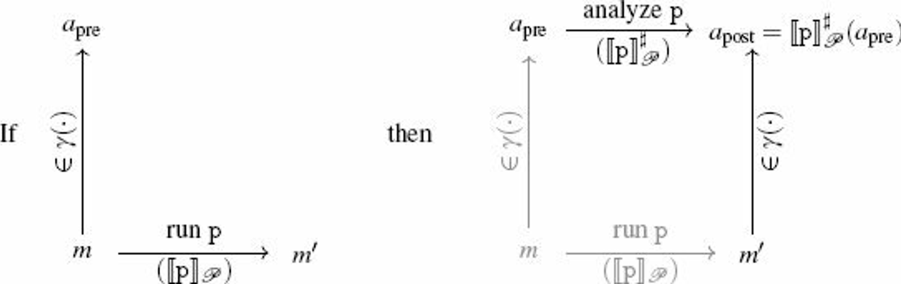

We call abstract domain a pair made of a set 𝔸 and an ordering relation ⊑ over that set. Given a concrete domain (ℂ, ⊆), an abstraction is defined by an abstract domain (𝔸, ⊑) and an abstraction relation (⊧) ⊆, ℂ × 𝔸, such that,
for all \(c \in ℂ, a_0, a_1 \in 𝔸\), if \(c \models a_0\) and \(a_0 \sqsubseteq a_1\), then \(c \models a_1\)
for all \(c_0, c_1 ∈ ℂ, a ∈ 𝔸\), if \(c_0 \subseteq c_1\) and \(c_1 \models a\), then \(c_0 \models a\)
The first one interpretation: if \(c\) satisfies the property described by the abstract element \(a_0\), and if the abstract element \(a_1\) expresses a weaker property than that expressed by \(a_0\), then \(c\) should also satisfy the abstract property \(a_1\).
A relation \(\models\) is sometimes replaced by "concretization function" and "abstraction function".
Let \(c\) be a concrete element. We say that \(c\) has a best abstraction if and only if there exists an abstract element \(a\) such that
\(a\) is an abstraction of \(c\), and
any other abstraction of \(c\) is greater than \(a\)
If it exists, this element is unique and called the best abstration of \(c\).
An abstraction function (or, for short, abstraction) is a function \(\alpha: ℂ \rightarrow 𝔸\) that maps each concrete element to its best abstraction.
Notes:
either of \(\gamma\) and \(\alpha\) fully describes the underlying abstraction relation
the existence of a best abstraction function is not guaranteed
A Galois connection is a pair made of a concretization function \(\gamma\) and an abstraction function \(\alpha\) such that
\[ \forall c \in ℂ, \forall a \in 𝔸, \alpha(c) \sqsubseteq a \Leftrightarrow c \subseteq \gamma(a) \]Galois connection's interesting properties:
α and γ are monotone functions , which means that they map logically comparable inputs into logically comparable outputs
\(\forall c \in ℂ, c \subseteq \gamma(\alpha(c))\) , which means that applying the abstraction function and concretization the result back yield a less precise result (or, equivalently, a conservative approximation)
\(\forall a \in 𝔸, \alpha(\gamma(a)) \sqsubseteq a\) , which means that concretizing an abstract element and then abstracting the result back refines the information available in the initial abstract element; this refinement is known as reduction
Intuitively, this abstraction
treats each variable independently
applies the value abstraction to each variable separated from the others
defines the order relation by the pointwise extension to abstract elements
In general, the choice of an efficient computer representation for abstract domains that describe relational constraints is more difficult than in the case of non-releational abstract domains.
Examples:
linear equalities
convex polyhedra
octagons

\([\text{p}]^{\#}_𝒫\): the static analysis function (abstract semantics)
Abstraction of a sequence of commands: compose each abstraction
\[ [C_0;C_1]^{\#}_𝒫(M^{\#}) = [C_1]^{\#}_𝒫([C_0]^{\#}_𝒫(M^{\#})) \]This can be generalized into the following theorem:
Let \(F_0, F_1: 𝒫(𝕄) \rightarrow 𝒫(𝕄)\) be two monotone functions, and let \(F_0^{\#}, F_1^{\#}: 𝔸 \rightarrow 𝔸\) be two functions that over-approximate them, that is such that \(F_0 \circ \gamma \subseteq \gamma \circ F_0^{\#}\) and \(F_1 \circ \gamma \subseteq \gamma \circ F_1^{\#}\).
Then \(F_0 \circ F_1\) can be over-approximated by \(F_0^{\#} \circ F_1^{\#}\).
\(F_1 \circ \gamma \subseteq \gamma \circ F_1^{\#}\) (by the soundness assumption on \(F_1\))
\(F_0 \circ F_1 \circ \gamma \subseteq F_0 \circ \gamma \circ F_1^{\#}\) (\(F_0\) is monotone)
\(F_0 \circ F_1 \circ \gamma \subseteq \gamma \circ F_0^{\#} \circ F_1^{\#}\) (by the soundness assumption on \(F_0\))
Intuitive understanding: we can decompose the over-approximation of a composition of operations into the composition of over-approximations of each operation.
Semantics of conditional branching:
\[ [\texttt{if}(B)\{C_0\} \texttt{else}\{C_1\}]_𝒫(M) = [C_0]_𝒫(ℱ_B(M)) \cup [C_1]_𝒫(ℱ_{\neg B}(M)) \]\(ℱ_{B}\): returns the memory states in \(M\) such that the condition \(B\) evaluates to true.
The abstract join operator \(\sqcup^{\#}\) should satisfy the following soundness property
\[ \gamma(M_0^{\#}) \cup \gamma(M_1^{\#}) \subseteq \gamma(M_0^{\#} \sqcup^{\#} M_1^{\#}) \]\(\sqcup^{\#}\) can be defined as a pointwise application of a join operator \(\sqcup^{\#}_𝒱\), which works in the value abstract domain:
\[ \text{Fro all variables } \texttt{x}, (M_0^{\#} \sqcup^{\#} M_1^{\#})(x) = M_0^{\#}(x) \sqcup^{\#}_𝒱 M_1^{\#}(x) \]And the definition of \(\sqcup^{\#}_𝒱\) will really depend on the abstract domain.
Semantics of conditional branching
\[ [\texttt{if}(B)\{C_0\} \texttt{else}\{C_1\}]^{\#}_𝒫(M^{\#}) = [C_0]^{\#}_𝒫(ℱ_B^{\#}(M^{\#})) \sqcup^{\#} [C_1]^{\#}_𝒫(ℱ_{\neg B}^{\#}(M^{\#})) \]Semantics of loops:
\[ [\texttt{while}(B)\{C\}]_𝒫(M) = ℱ_{\neg B} (\cup_{i \ge 0}([C]_𝒫 \circ ℱ_B)^i(M)) \]Let \(F = [C]_𝒫 \circ ℱ_B\)
if the sequence of abstract iterates converges (which can be observed simply by checking that two consecutive iterates are equal), the its final values over-approximates all the concrete behaviors of the program \(\texttxt{while}(B){C}\)
under the assumption that the sequence converges (<- not always true)
=> ensure convergence
Convergence:
make the abstract domain has finite height: ensure \(M_k^{\#} ⊏ M_{k+1}^{\#}\) cannot hold infinitely many times
=> converges when the abstract iteration doesn't discover any new behavior
widening: necessary when the abstract domain doesn't have finite height
A widening operator over an abstract domain 𝔸 is a binary operator \(\triangledown\), such that
for all abstract elements \(a_0, a_1\), we have
for all sequences \((a_n)_{n \in ℕ}\) of abstract elements, the sequence \((a^\prime_n)_{n \in ℕ}\) defined below is ultimately stationary
\(a^\prime_0 = a_0\)
\(a^\prime_{n+1} = a^\prime_n \triangledown a_n\)
widening could be built by dropping constraints that are not stable
e.g. interval abstract domain
\([n, p] \triangledown [n, q] = [n, p] (\text{if } p \ge q), [n, +\infty) (\text{if } p < q)\)
fix the reference concrete semantics
select the abstraction
derive analysis algorithms